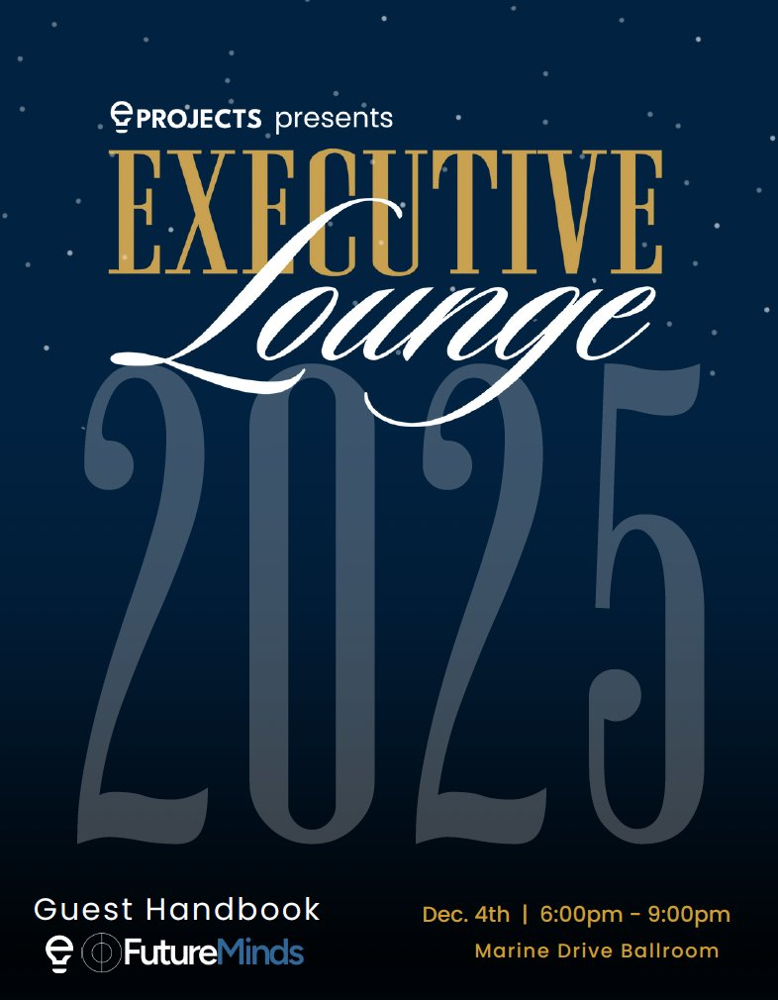

Creative strategist and storyteller designing campaigns for large-scale university clubs, writing work published in the UBC Magazine, and making visual art across painting and graphite.


A collection of campus vignettes, written and illustrated — published externally.
A nonfiction piece about my grandmother, paired with a graphite portrait I sketched to capture her soft expression.
On my brother, patience, and what it means to be looked after.